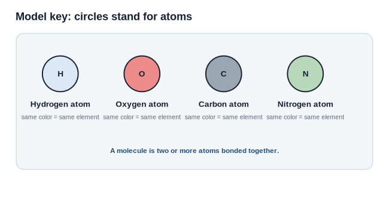
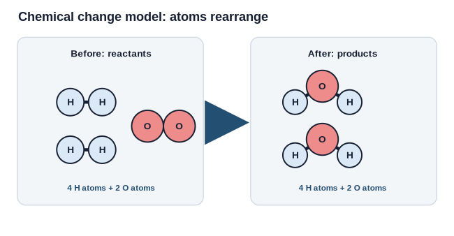
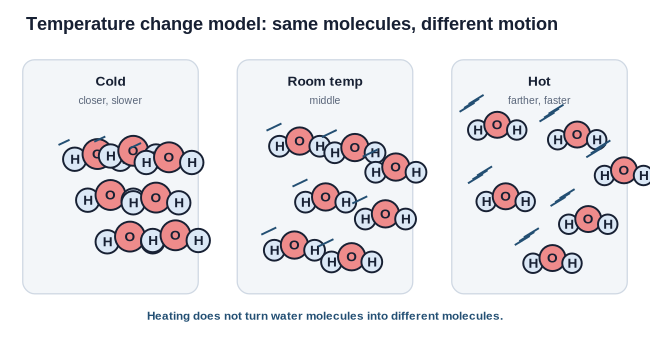

1. Model key

Use the same atom key before and after a change.
Remember: same color/letter = same element. Connected circles = atoms bonded in a molecule.
2. Chemical change model

In a chemical change, atoms rearrange into new molecules. The atom counts should still match.
| Question | Your notes |
|---|---|
| What atom types are present before? | |
| What atom types are present after? | |
| What changed in the molecule arrangement? |
3. Temperature change model

Heating changes molecular motion and spacing. It does not automatically make new molecules.
Heating: molecules move faster and tend to be farther apart.
Cooling: molecules move slower and tend to be closer together.
4. Practice drawing
A. Draw a before-and-after model for: 2 H2 molecules + 1 O2 molecule -> 2 H2O molecules.
| H atoms | O atoms | |
|---|---|---|
| Before | ||
| After |
B. Explain: How is a chemical-change model different from a temperature-change model?